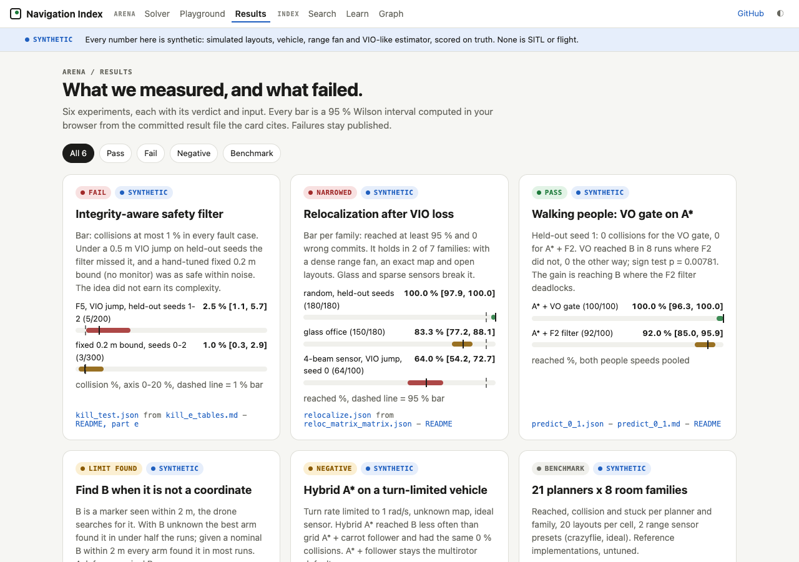
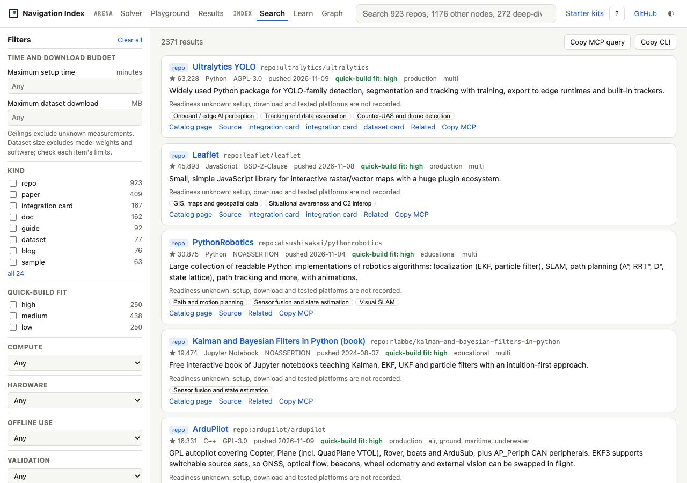

Solver, Quick sweep on random_0
syntheticLoading site/solver/results/quick_random_0.json...
Open navigation knowledge for drones and robots
The Arena runs this hub's real Python planners in your browser and ranks them with confidence intervals. Around it: a linked catalog of open-source navigation work and runnable samples that say what ran on which data.
Every number says what it ran on: synthetic, SITL or real. Arena results are synthetic simulation scored on truth. None is a flight result.
Which planner for this room? Every planner, N seeds, ranked with 95 % intervals.
Why did it crash? Draw walls and glass, fly one run, see the sensor.

What was measured? Replays, the benchmark, and what failed.

What exists for this? Repos, papers, datasets, primer, cheat sheets.
Loading site/solver/results/quick_random_0.json...
Loading site/data/showcase/story/kill_test.json...